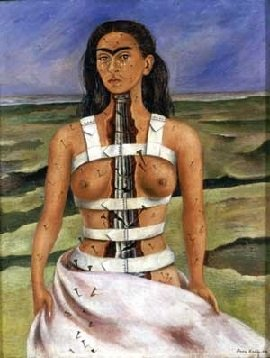

The Broken Column
Frida Kahlo · 1944 · Oil on masonite · 39.8 × 30.6 cm · Museo Dolores Olmedo, Mexico City
In copyright. Look and learn: shown for study, not for download.
Kahlo painted this in 1944, shortly after spinal surgery for problems left by the traffic accident she survived at eighteen. That year her doctors had her wear a steel corset in place of the plaster casts she had worn before. The brace in the painting is one she actually used, and it is now kept at her home, the Casa Azul. The nails run down only her right leg, the one left shorter and weaker by polio in childhood.